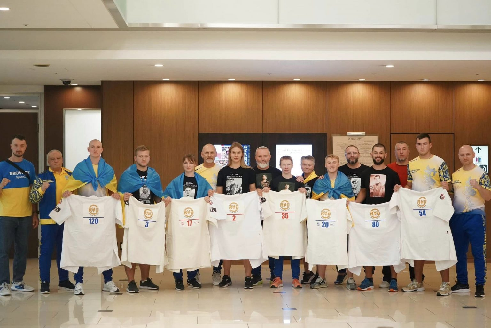

Кіокушинкай карате у Львові — популярне бойове мистецтво для дітей від 4–5 років, підлітків та дорослих, яке об’єднує понад 100 тренувальних залів у всіх районах міста.
Провідні клуби та федерації • Львівська обласна федерація кіокушинкай карате (ЛОФКК). Об’єднує понад 40 секцій у місті та області (офіційний представник — Korol Dojo). Організація готує спортсменів до чемпіонатів України та Європи, а також регулярно проводить локальні турніри. Контакт: +380 97 209 1841. • СК «КАНКУ-ЛЬВІВ». Один із найбільших клубів міста, що налічує понад 60 залів у Львові та передмістях. Для новачків доступні 1–2 безкоштовні пробні заняття (абонемент коштує від 900 до 1900 грн/міс). Контакт: +380 68 003 7713. • Студії у фітнес-клубах. Дитячі групи працюють у спортивних та освітніх центрах, зокрема у фітнес-клубі «ЛІГА» на вул. Шафарика (для дітей 5–12 років) та у мережі GlobalKids.
Що дають тренування • Фізична форма. Розвиток сили, витривалості, гнучкості, координації та швидкості реакції. • Техніка та спаринги. Вивчення базових ударів і блоків (кіхон), формальних комплексів (ката) та повноконтактних поєдинків (куміте) із використанням захисного спорядження. • Характер і мотивація. Виховання дисципліни, поваги та впевненості у собі, а також регулярне складання іспитів на пояси й участь у змаганнях.
Приклади локацій у Львові • Франківський та Галицький райони. Зали на вул. С. Бандери, 14 та вул. У. Самчука, 14. • Сихівський та Личаківський райони. Секції на вул. Квітки Цісик, 16 (СЗШ №54), вул. Тютюнників, 2 (Ліцей №28) та вул. Шафарика. • Шевченківський та Залізничний райони. Тренування на вул. Варшавській, 58, вул. М. Хвильового, 16 та вул. Виговського, 7А (СШ №77).
